Loona 交互工作台 v1.0 · 对照图
UI-SPEC 固定尺寸铁律 + 9 场景 premium mock + persona TTS + 协作控制台。设备 812×375 横版，device-cropped 截图。校验脚本 _review/_audit/measure.js。
① 9 场景 · 终态结果（默认/关键形态）

陪聊纯语音承接双眼静态 + 2 行共情字幕（无卡不截断）· emotion R0 A≤A1

天气·沉浸先穿衣建议再数据渐变天色 + 5 日 chip + "最适合/带伞日" · 主播 persona

邮件·卡片ListCard 优先级队列P1/P2/P3 分层 + 脚注下一步 · 草稿≠发送

日程·卡片4 事件 · 冲突/空档判断时间+地点副信息 · 找到空档≠已创建 · 创建走槽位澄清
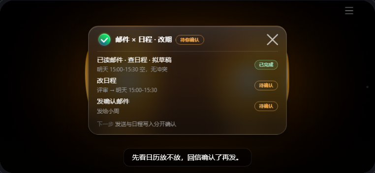
邮件×日程·卡片可见多步 + 双确认步骤行状态 · 发送与日程写入分开确认

会议·卡片SectionCard 决策/行动/未定决策先行 · 负责人 pending 不乱填

餐厅·沉浸主推一家 + 换一个全幅店内封面 · 不编菜单/不保证有位
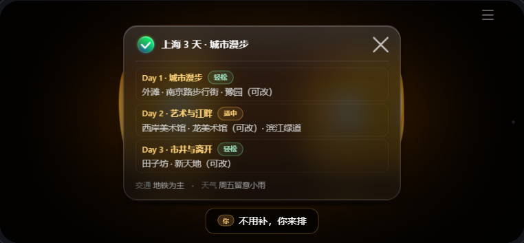
旅行·卡片SectionCard 三日分段pace badge + 可改 tag + 交通/天气脚注

旅行·沉浸三日封面横向陈列真实图 · 规划师 persona 整体基调→逐日
② 新闻 · 一套数据 × 三种展现形式（皮肤=形态，非颜色）× list↔focus

编辑卡 list图+标题+摘要+可信度

编辑卡 focus大图+导语+要点+影响（高密度）
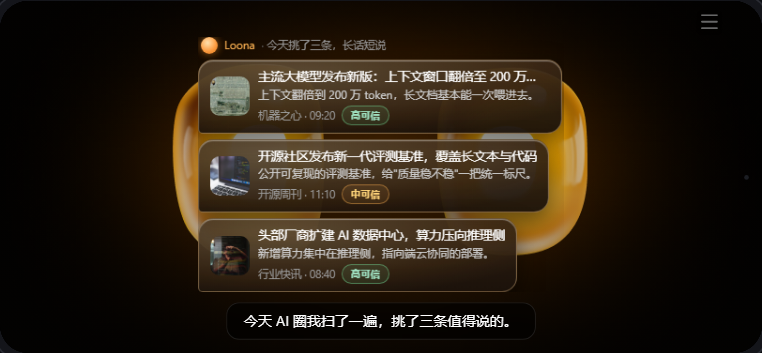
对话气泡 listLoona「说」新闻（暖凝胶气泡串）
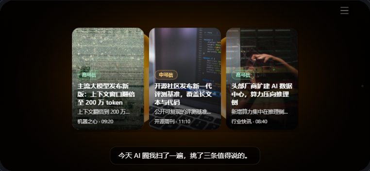
沉浸 list封面横向陈列（杂志架）
③ 澄清 / 确认门（短卡居中，2 行字幕安全）

ClarifyCard 槽位必填(已填✓)+选填 + 选项；卡≠TTS

ConfirmCard摘要 + 双按钮（R4 保存，无 X/无倒计时，显式决策）
④ 协作控制台
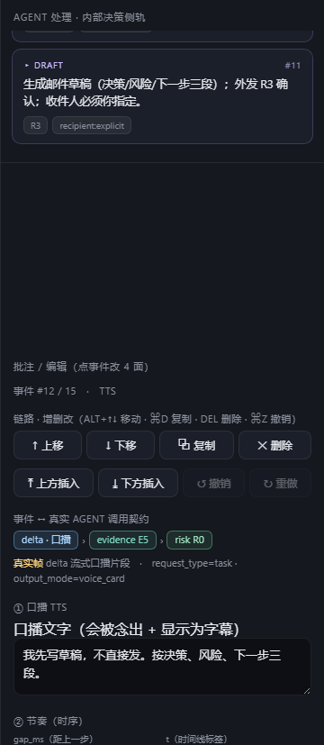
链路增删改 + 契约映射4×2 操作 + 快捷键 + 事件↔真实 agent 调用契约 chips（frame › evidence › risk）
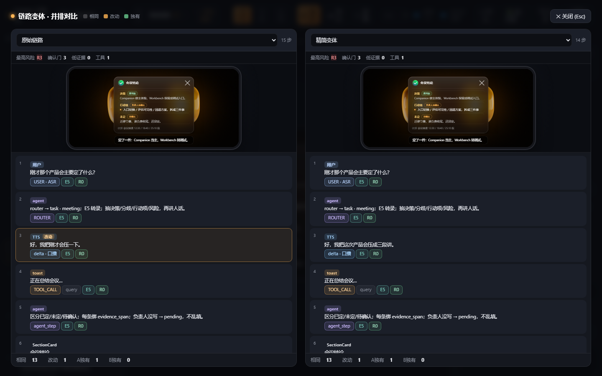
变体并排对比双列 mini-device 结果卡预览 + 事件链 chips + LCS diff + 契约体检表
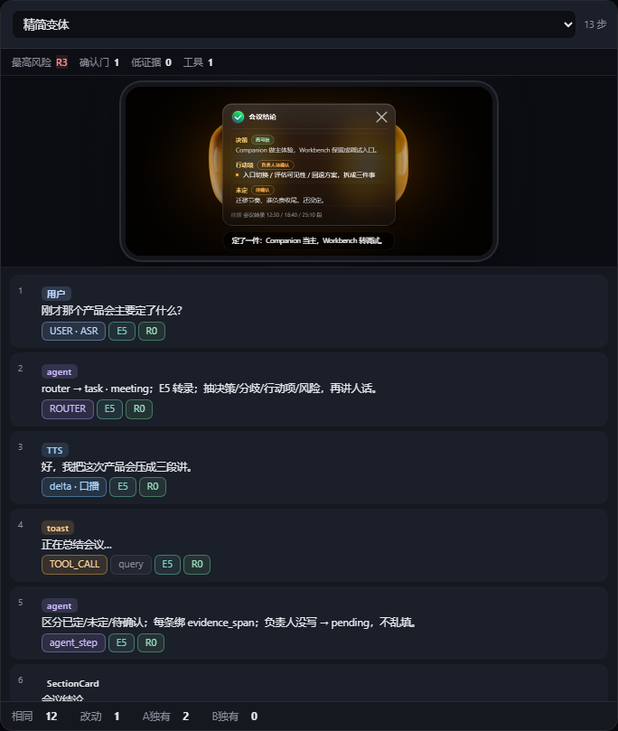
对比列细节体检表(最高风险/确认门/低证据) + 逐步 chips + diff 统计
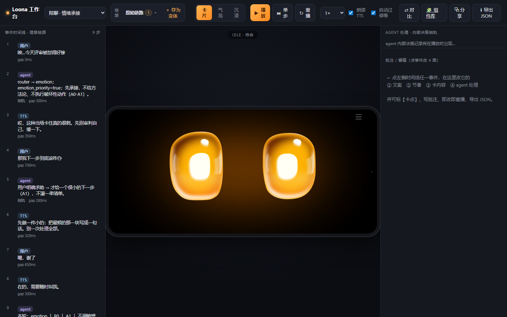
工作台外壳变体条 + 形态段控 + 播放控制 + 对比/分享/导出
⑤ 铁律证据 · 溢出根治（压力测试 before → after）
对 9 场景灌入"压力内容"（多塞 6 行 / 4 段 / 5 条 + 超长文案），度量最高卡高与对 CardStage(287px) 的溢出、对字幕的压盖。（容器本轮已统一放大到 430×287，压力测试仍 0 溢出。）
| 场景 / 皮肤 | 改造前 卡高 | 改造前 溢出 | 改造前 压字幕 | 改造后 溢出 | 改造后 压字幕 |
|---|
| 邮件 glass | 750px | +477 | 226px | 0 | 0 |
| 邮件×日程 glass | 750px | +477 | 236px | 0 | 0 |
| 新闻 bubble | 695px | +422 | 199px | 0 | 0 |
| 天气 glass | 643px | +370 | 173px | 0 | 0 |
| 旅行 / 会议 glass | 568px | +295 | 135px | 0 | 0 |
改造后全 16 组合（含内置变体）maxOverflow=0 · maxSubOverlap=0，超高处 pl-body 内部滚动、头/脚常驻、渐隐边提示。§12 校验 verify.js 现跑满 9 场景×形态全矩阵（token/宽度/溢出/字幕，11/11 PASS），无死角。压力卡示例：
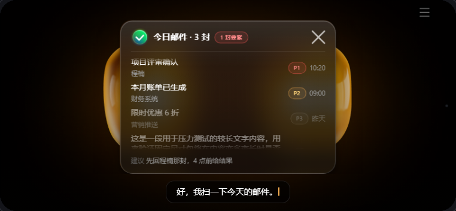
压力·邮件头脚常驻 + 正文内滚 + 渐隐边（封顶 287）
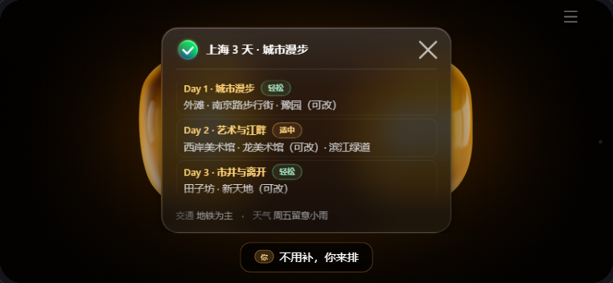
压力·旅行分段超量内部滚动，不撑卡
⑥ 交互模式（本轮新增 · UI-SPEC §14）
缺必填→槽位卡问一次(不猜) · 列表→单卡召回 · 沉浸聚光 · 确认门=显式二选一+状态回执 · 详情可收起。
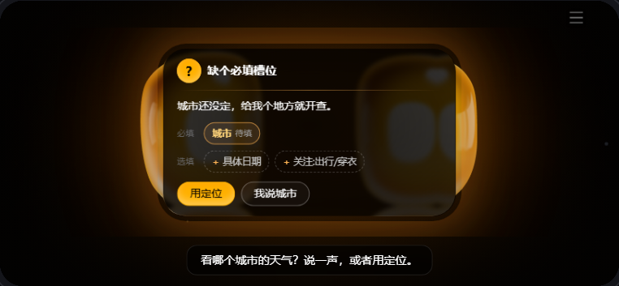
槽位澄清·天气缺城市→待填槽位（不猜附近，REQ-WX-001）

槽位澄清·餐厅位置待填 + 场景已填✓ + 选填

槽位澄清·日程动作槽：时间待填+标题✓，快选接已查空档

单日召回·旅行左图 + 上午/下午/傍晚（像新闻 list→focus）
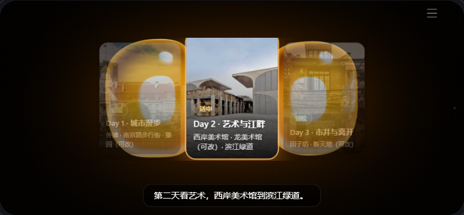
沉浸聚光讲到哪张：放大呼吸 + 其余压暗 + 居中

确认门只有 发送/取消（无 X / 无倒计时）

动作回执发送中→已发送✓·查看详情（卡退回双眼，留回执）
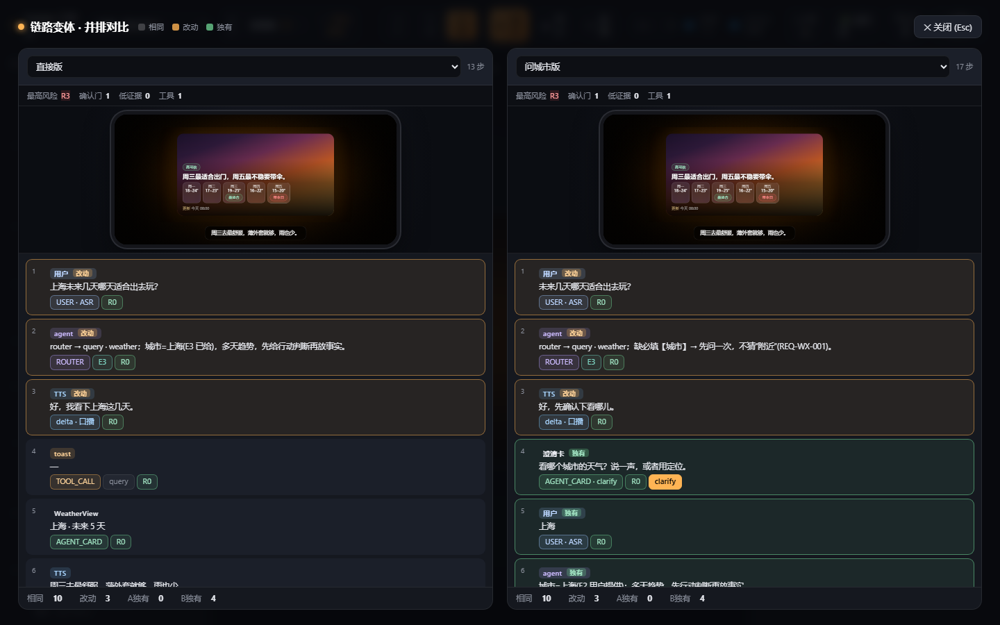
变体并排·天气直接版 vs 问城市版（相同10 / 改动3 / 独有4）
⑦ 失败 / 部分成功 + 评审结论（本轮新增）
规格最有分量、却一度 0 演示覆盖的一块：诚实报状态、谁知道 / 谁不知道、永远给下一步（REQ-FAIL-001）。邮件×日程做成「全成功 / 部分失败」两个内置变体并排——失败也不慌。persona 深度也拉平：天气/邮件/餐厅/会议提到与新闻/旅行同档的多拍叙述。

部分失败·回执✓ 日程已改 / ✕ 邮件没发出 · 小周还不知道改期 + 下一步三选项发送门确认后超时失败 → 不假称已发(outcome:fail→发送中→发送失败)；FailureCard 拆开成功/失败
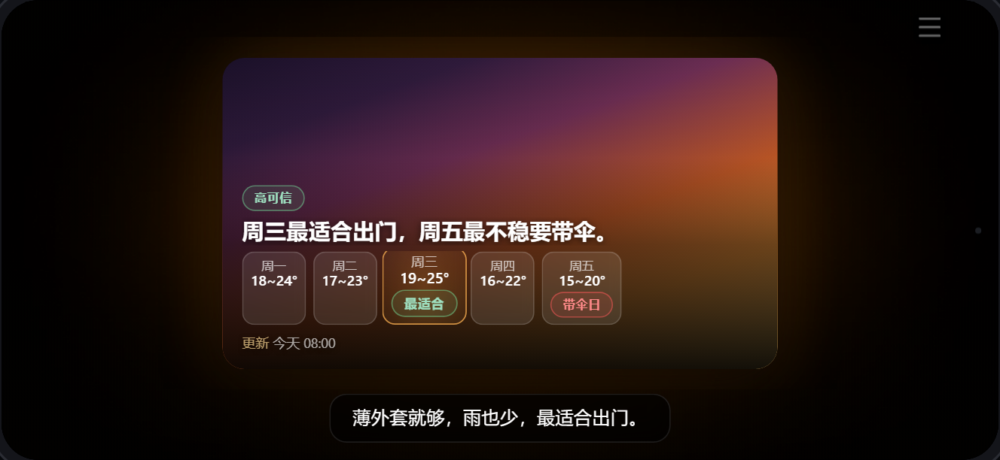
persona 拉平·天气主播开场→整体→最适合日(穿衣)→转折→带伞，多拍逐日高亮字幕每拍 ≤21 字，结果卡恒 1 行不截断

全成功 vs 部分失败 · 并排同一计划两种结局：左列 ListCard、右列 FailureCardLCS diff 标"相同/改动/独有"；前半段共用 OPEN，仅第 2 道门后分叉
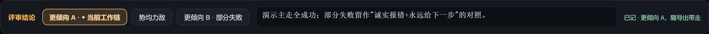
评审结论条更倾向 A/B/势均力敌 + 备注 → 对比直接产出团队结论持久化(localStorage)，随 variants.json 导出；用户标注也一并带走(annotations_resolved)
控制台另加两条契约校验：私域数据·未见授权声明（read_private_data 全链须 OAuth/已连）、外发·收件人未明确（发送门 target 不空/不纯占位）。9 条理想链均已声明授权 → 体检表全绿；编辑出违规时实时标 ⚠。